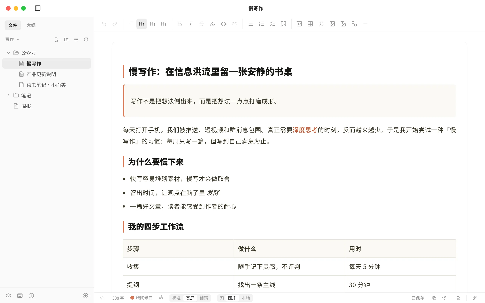
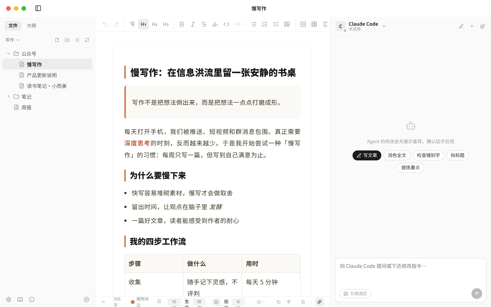
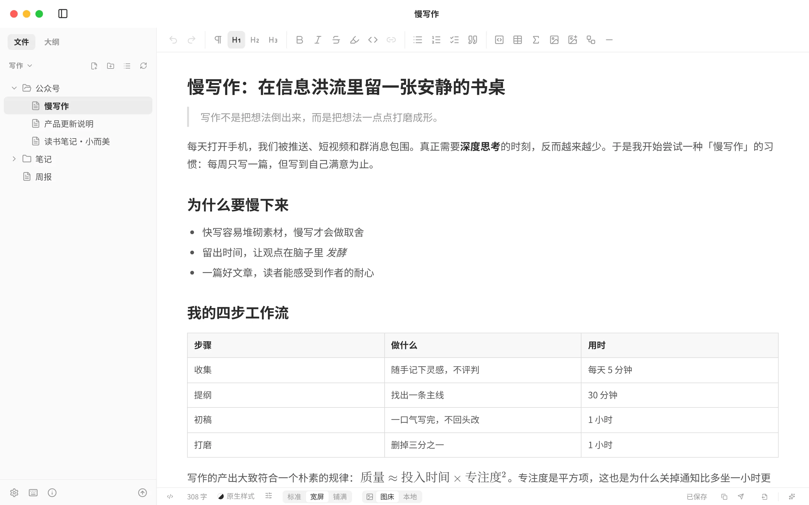
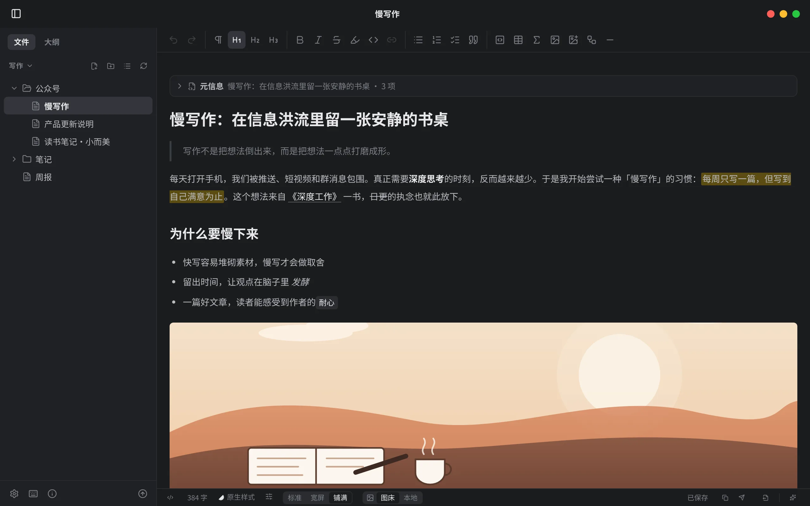
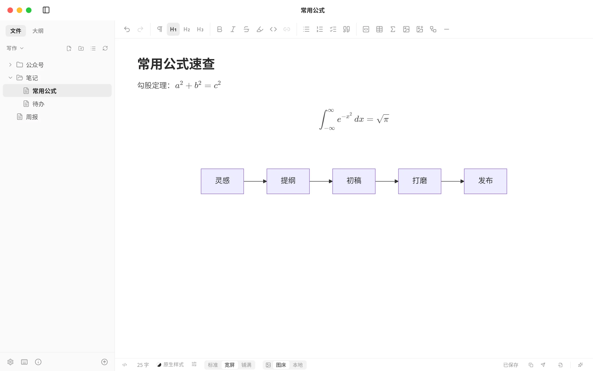

写作、排版、AI 辅助与发布，装进一个十几 MB 的安装包。笔记是本地文件夹里的 .md，写完即可复制带排版的内容，或一键发到公众号。

不做大而全的知识库，只把「写一篇好文章并把它发出去」这件事做得轻巧、顺手、好看。
在状态栏切换主题，编辑区即刻换装；字号、段距、外链转脚注也都能调。点一点左边的色块试试。
MarkGo 通过 Agent Client Protocol 连接你电脑上已经登录好的 AI Agent，不调用模型 API，也不需要 API Key。

每天打开手机，我们被推送、短视频和群消息包围淹没在推送与群消息里。真正需要深度思考的时刻，反而越来越少正在悄悄消失。
浅色、深色或跟随系统；拖动中间的把手看看。


排版跟着内容走：粘贴到哪里都还是这个样子。
⌘⇧C 复制带样式的富文本，粘贴到任意富文本编辑器。
直接写入草稿箱，正文图片自动转存压缩，AI 帮你起标题、写摘要。
按编辑区样式直接生成，可设纸张、方向、页边距与一级标题分页。
带排版的 HTML；装上 Pandoc 还能导出：
输入 $E=mc^2$ 即刻渲染；```mermaid 实时出图。发布时公式自动转 SVG、图表自动转图片，目标平台什么都不用支持。
assets
免费、开源，三个平台都有。安装后有新版本时，应用内一键更新。
xattr -cr /Applications/MarkGo.app 后重新打开。